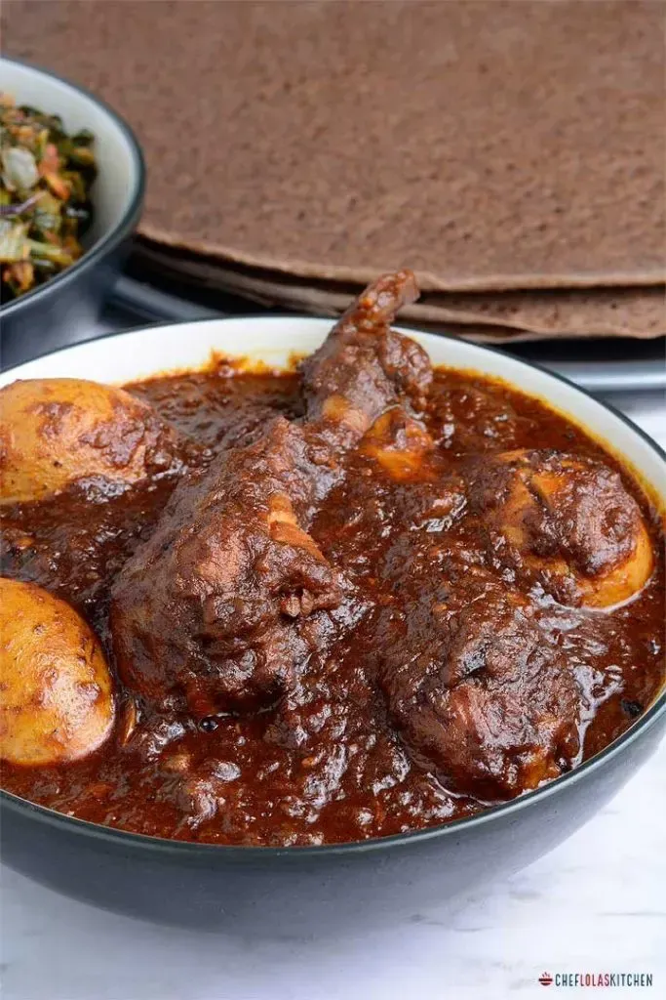

Doro Wat

Doro Wat (also spelled Doro Wot ) is a rich, spicy chicken stew that is considered Ethiopia's national dish. It is a slow-cooked masterpiece made with tender chicken pieces simmered in a deeply flavorful sauce of caramelized onions, garlic, ginger, and the signature spice blend berbere . Hard-boiled eggs are often added to absorb the aromatic sauce, making this dish both hearty and indulgent.
Ingredients
-
1 whole chicken, cut into pieces (or 4–6 chicken thighs)
-
1 large onion, finely chopped
-
4 cloves garlic, minced
-
1-inch piece of ginger, grated
-
4 tbsp berbere spice blend (store-bought or homemade)
-
1/4 cup niter kibbeh (spiced clarified butter) or regular butter
-
2 tbsp tomato paste
-
1 cup chicken broth
-
2 hard-boiled eggs, peeled
-
Salt to taste
-
Fresh cilantro for garnish
Steps
-
Heat the niter kibbeh in a large pot over medium heat. Add the onions and cook, stirring frequently, until caramelized and deep brown (about 20–30 minutes).
-
Stir in the garlic, ginger, and berbere spice blend. Cook for 2–3 minutes until fragrant.
-
Add the tomato paste and chicken broth, stirring to combine. Bring to a simmer.
-
Add the chicken pieces and season with salt. Cover and simmer for 45 minutes to 1 hour, until the chicken is tender.
-
During the last 10 minutes of cooking, add the hard-boiled eggs to the stew to absorb the flavors.
-
Serve hot with injera and garnish with fresh cilantro.